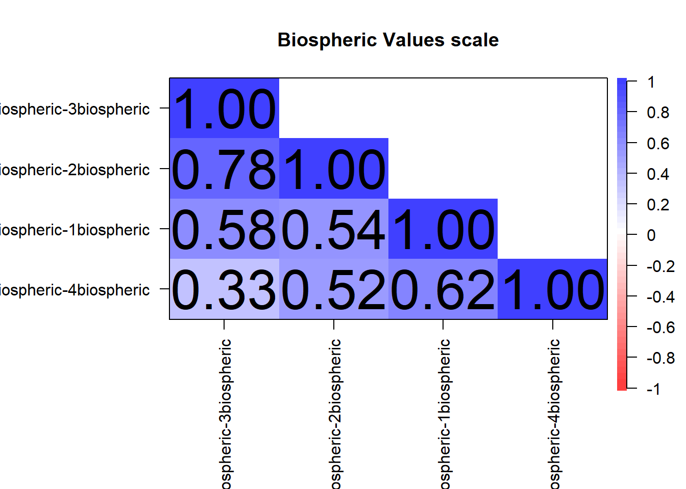
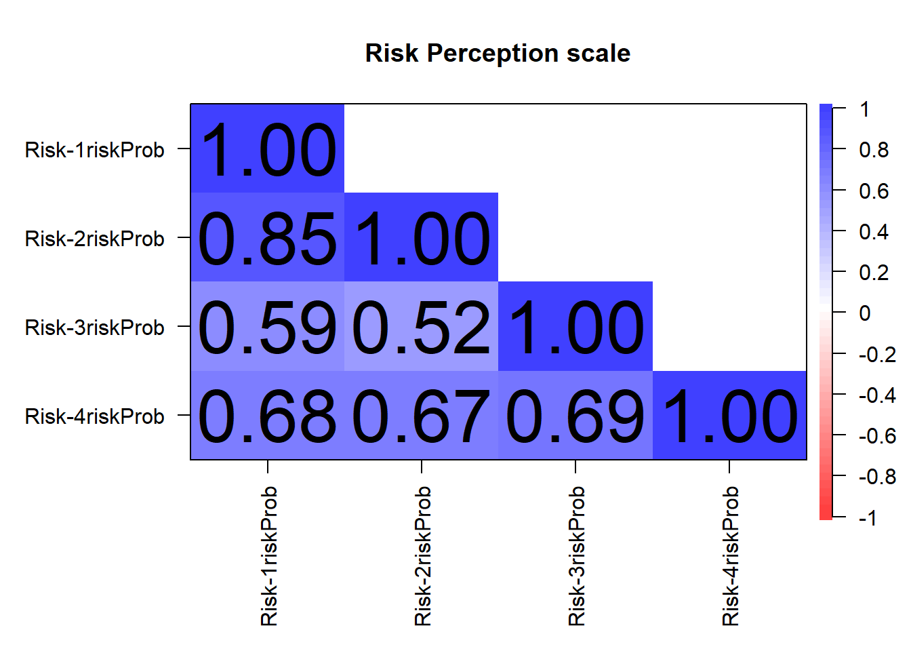
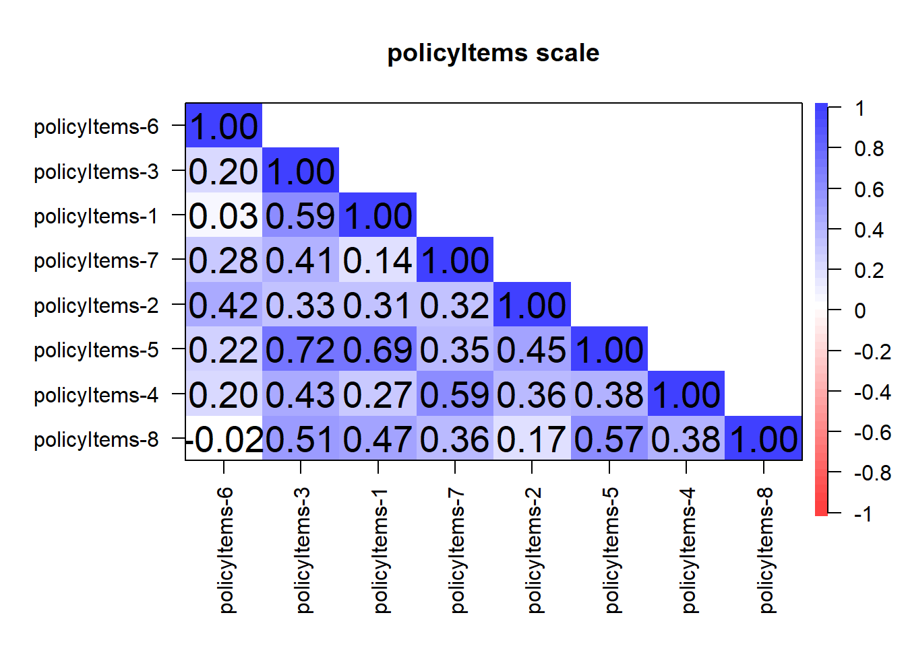
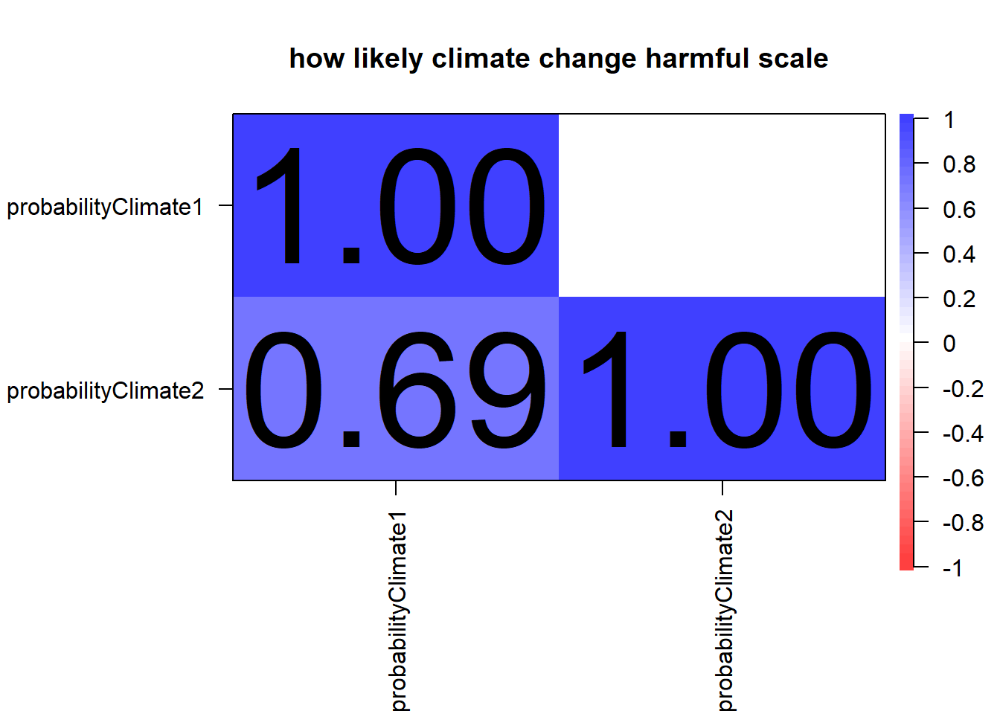
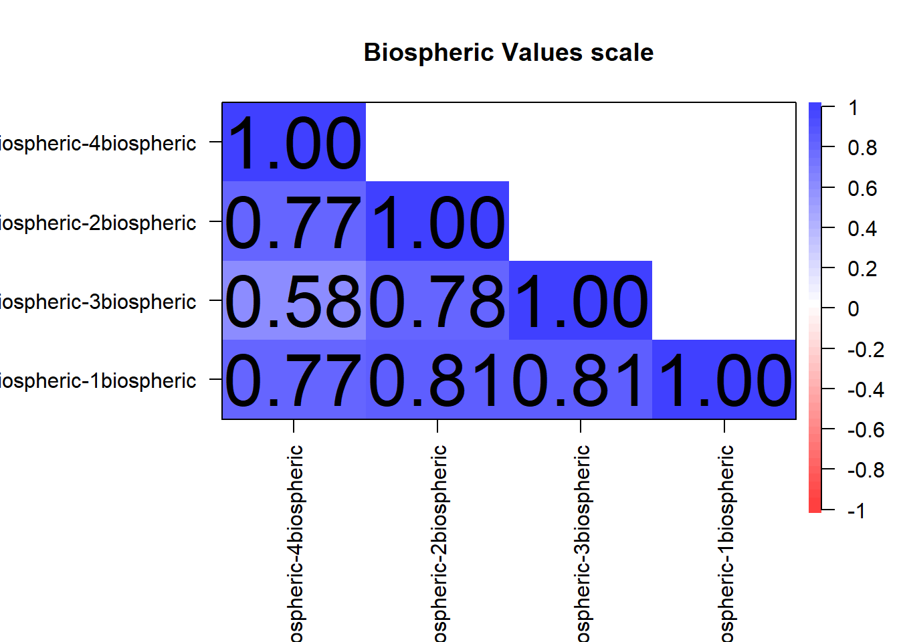
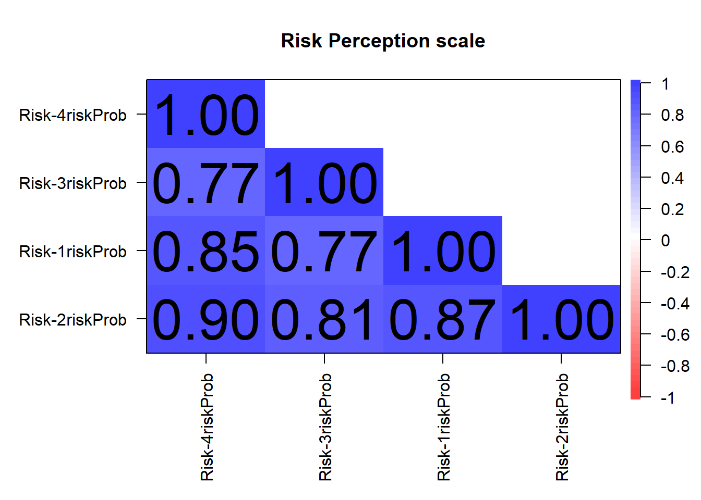
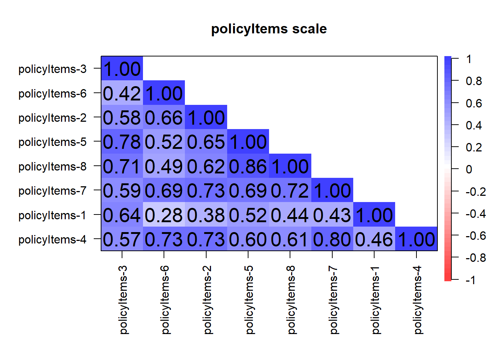
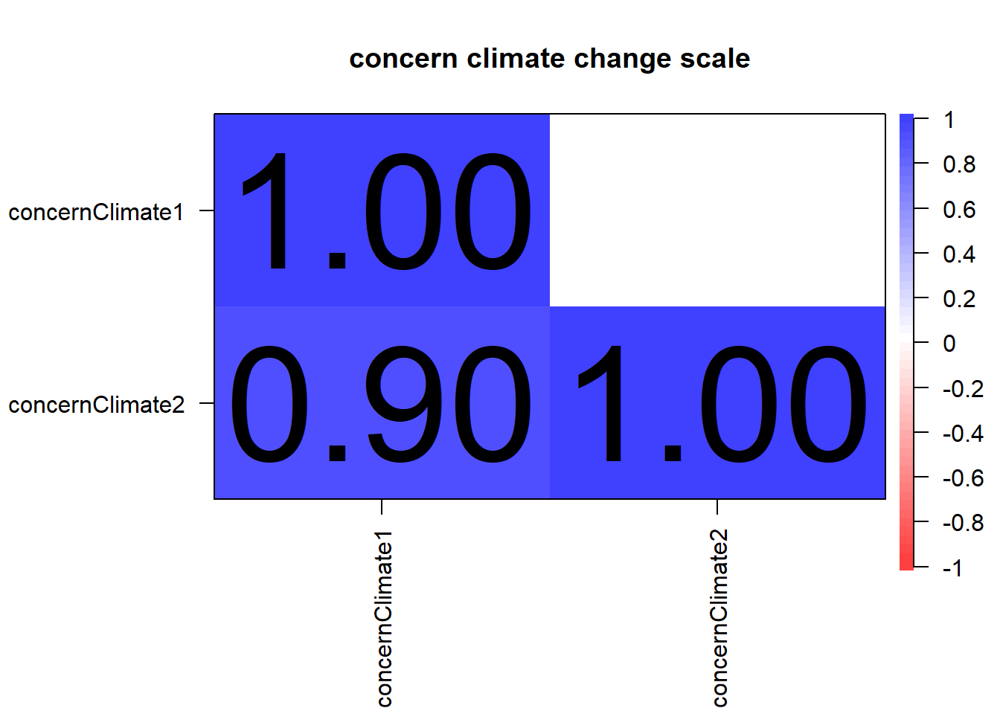
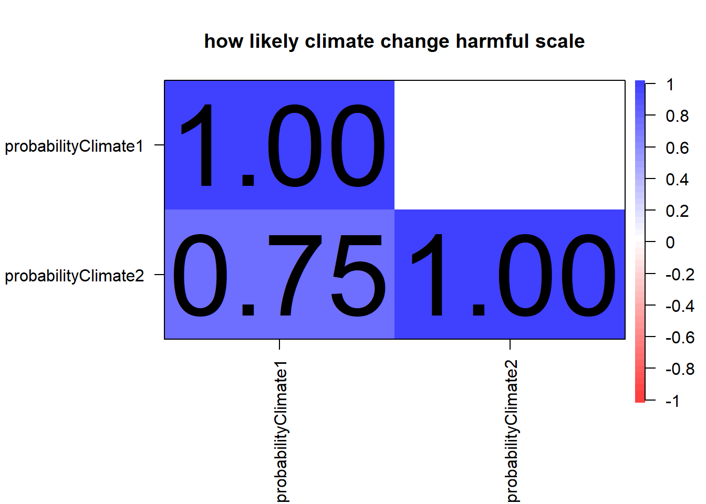

vars n mean sd median trimmed mad min max range skew kurtosis se
X1 1 55 41.96 13.72 39 41.53 16.31 20 70 50 0.33 -1.11 1.85
################# IDs who have not participated yettmp_dat <- questionnaire_t1[questionnaire_t1$country =="USA"& (questionnaire_t1$classes_conspiracy =="1"| questionnaire_t1$classes_conspiracy =="3"),]tmp_dat <- tmp_dat$PROLIFIC_PID[!tmp_dat$PROLIFIC_PID %in% questionnaire_USA$PROLIFIC_PID]write.xlsx2(x = tmp_dat, file ="outputs/PROLIFIC_PIDs_USA_notParticipated.xlsx")
compute mean variables for scales
for Germany
######################################### number of items for each scale########################################sum(str_detect(string =colnames(questionnaire_Germany), pattern ="^Biospheric"))
######################################### reverse code all items#> see negative correlation between single items######################################### items van der Linden - Biospheric Values 2015psych::cor.plot(r =cor(questionnaire_Germany[, str_detect(string =colnames(questionnaire_Germany),pattern ="^Biospheric")], use ="pairwise.complete.obs"),upper =FALSE, xlas =2, main ="Biospheric Values scale")

# items van der Linden - Risk Perception 2015psych::cor.plot(r =cor(questionnaire_Germany[, str_detect(string =colnames(questionnaire_Germany),pattern ="^Risk")], use ="pairwise.complete.obs"),upper =FALSE, xlas =2, main ="Risk Perception scale")

# policy items psych::cor.plot(r =cor(questionnaire_Germany[, str_detect(string =colnames(questionnaire_Germany),pattern ="^policyItems")], use ="pairwise.complete.obs"),upper =FALSE, xlas =2, main ="policyItems scale")

# items van der Linden - concern climate changepsych::cor.plot(r =cor(questionnaire_Germany[, str_detect(string =colnames(questionnaire_Germany),pattern ="^concernClimate")], use ="pairwise.complete.obs"),upper =FALSE, xlas =2, main ="concern climate change scale")
# items van der Linden - how likely climate change harmfulpsych::cor.plot(r =cor(questionnaire_Germany[, str_detect(string =colnames(questionnaire_Germany),pattern ="^probabilityClimate")], use ="pairwise.complete.obs"),upper =FALSE, xlas =2, main ="how likely climate change harmful scale")

# items van der Linden - concern climate changepsych::cor.plot(r =cor(questionnaire_Germany[, str_detect(string =colnames(questionnaire_Germany),pattern ="^concernClimate|^probabilityClimate")], use ="pairwise.complete.obs"),upper =FALSE, xlas =2, main ="concern climate change plus how likely climate change harmful scale")
######################################### number of items for each scale########################################sum(str_detect(string =colnames(questionnaire_USA), pattern ="^Biospheric"))
######################################### reverse code all items#> see negative correlation between single items######################################### items van der Linden - Biospheric Values 2015psych::cor.plot(r =cor(questionnaire_USA[, str_detect(string =colnames(questionnaire_USA),pattern ="^Biospheric")], use ="pairwise.complete.obs"),upper =FALSE, xlas =2, main ="Biospheric Values scale")

# items van der Linden - Risk Perception 2015psych::cor.plot(r =cor(questionnaire_USA[, str_detect(string =colnames(questionnaire_USA),pattern ="^Risk")], use ="pairwise.complete.obs"),upper =FALSE, xlas =2, main ="Risk Perception scale")

# policy items psych::cor.plot(r =cor(questionnaire_USA[, str_detect(string =colnames(questionnaire_USA),pattern ="^policyItems")], use ="pairwise.complete.obs"),upper =FALSE, xlas =2, main ="policyItems scale")

# items van der Linden - concern climate changepsych::cor.plot(r =cor(questionnaire_USA[, str_detect(string =colnames(questionnaire_USA),pattern ="^concernClimate")], use ="pairwise.complete.obs"),upper =FALSE, xlas =2, main ="concern climate change scale")

# items van der Linden - how likely climate change harmfulpsych::cor.plot(r =cor(questionnaire_USA[, str_detect(string =colnames(questionnaire_USA),pattern ="^probabilityClimate")], use ="pairwise.complete.obs"),upper =FALSE, xlas =2, main ="how likely climate change harmful scale")

# items van der Linden - concern climate changepsych::cor.plot(r =cor(questionnaire_USA[, str_detect(string =colnames(questionnaire_USA),pattern ="^concernClimate|^probabilityClimate")], use ="pairwise.complete.obs"),upper =FALSE, xlas =2, main ="concern climate change plus how likely climate change harmful scale")
[1] "create_wordlist - use raw words"
[1] 0
[1] 1059
[1] "temporarily suffixes are added, because not all words have been summarized"
processing 75 CAMs...
[1] "== ids_CAMs in drawnCAM"
time 2023-12-19 14:51:31.143704 at index 1 for approximate matching
time 2023-12-19 14:51:41.458111 at index 2 for approximate matching
time 2023-12-19 14:51:47.933407 at index 3 for approximate matching
time 2023-12-19 14:51:51.635981 at index 4 for approximate matching
time 2023-12-19 14:51:58.852437 at index 5 for approximate matching
time 2023-12-19 14:52:03.817371 at index 6 for approximate matching
time 2023-12-19 14:52:08.466565 at index 7 for approximate matching
time 2023-12-19 14:52:14.258757 at index 8 for approximate matching
time 2023-12-19 14:52:22.389707 at index 9 for approximate matching
time 2023-12-19 14:52:24.352739 at index 10 for approximate matching
time 2023-12-19 14:52:26.175507 at index 11 for approximate matching
time 2023-12-19 14:52:30.772359 at index 12 for approximate matching
time 2023-12-19 14:52:41.090231 at index 13 for approximate matching
time 2023-12-19 14:52:49.451251 at index 14 for approximate matching
time 2023-12-19 14:52:54.511947 at index 15 for approximate matching
time 2023-12-19 14:53:06.851979 at index 16 for approximate matching
time 2023-12-19 14:53:12.629914 at index 17 for approximate matching
time 2023-12-19 14:53:14.587973 at index 18 for approximate matching
time 2023-12-19 14:53:21.621694 at index 19 for approximate matching
time 2023-12-19 14:53:25.463528 at index 20 for approximate matching
time 2023-12-19 14:53:31.892214 at index 21 for approximate matching
time 2023-12-19 14:53:34.832184 at index 22 for approximate matching
time 2023-12-19 14:53:36.717484 at index 23 for approximate matching
time 2023-12-19 14:53:41.674065 at index 24 for approximate matching
time 2023-12-19 14:53:59.155875 at index 25 for approximate matching
time 2023-12-19 14:54:02.675782 at index 26 for approximate matching
time 2023-12-19 14:54:11.227164 at index 27 for approximate matching
time 2023-12-19 14:54:20.386341 at index 28 for approximate matching
time 2023-12-19 14:54:24.993361 at index 29 for approximate matching
time 2023-12-19 14:54:28.923087 at index 30 for approximate matching
time 2023-12-19 14:54:36.528794 at index 31 for approximate matching
time 2023-12-19 14:54:40.216311 at index 32 for approximate matching
time 2023-12-19 14:54:47.458531 at index 33 for approximate matching
time 2023-12-19 14:54:53.062226 at index 34 for approximate matching
time 2023-12-19 14:54:55.09811 at index 35 for approximate matching
time 2023-12-19 14:54:57.909859 at index 36 for approximate matching
time 2023-12-19 14:55:00.126381 at index 37 for approximate matching
time 2023-12-19 14:55:15.463262 at index 38 for approximate matching
time 2023-12-19 14:55:17.110579 at index 39 for approximate matching
time 2023-12-19 14:55:21.011649 at index 40 for approximate matching
time 2023-12-19 14:55:31.673328 at index 41 for approximate matching
time 2023-12-19 14:55:36.342479 at index 42 for approximate matching
time 2023-12-19 14:55:38.062139 at index 43 for approximate matching
time 2023-12-19 14:55:40.254951 at index 44 for approximate matching
time 2023-12-19 14:55:43.76299 at index 45 for approximate matching
time 2023-12-19 14:55:50.802179 at index 46 for approximate matching
time 2023-12-19 14:55:53.332721 at index 47 for approximate matching
time 2023-12-19 14:56:16.362612 at index 48 for approximate matching
time 2023-12-19 14:56:54.430761 at index 49 for approximate matching
time 2023-12-19 14:57:10.680964 at index 50 for approximate matching
time 2023-12-19 14:57:19.703733 at index 51 for approximate matching
time 2023-12-19 14:57:26.685088 at index 52 for approximate matching
time 2023-12-19 14:57:33.237086 at index 53 for approximate matching
time 2023-12-19 14:57:38.131959 at index 54 for approximate matching
time 2023-12-19 14:57:45.670016 at index 55 for approximate matching
time 2023-12-19 14:57:59.911048 at index 56 for approximate matching
time 2023-12-19 14:58:13.803198 at index 57 for approximate matching
time 2023-12-19 14:58:23.077178 at index 58 for approximate matching
time 2023-12-19 14:58:33.754462 at index 59 for approximate matching
time 2023-12-19 14:58:48.473052 at index 60 for approximate matching
time 2023-12-19 14:58:58.762845 at index 61 for approximate matching
time 2023-12-19 14:59:08.109597 at index 62 for approximate matching
time 2023-12-19 14:59:17.901415 at index 63 for approximate matching
time 2023-12-19 14:59:40.782217 at index 64 for approximate matching
time 2023-12-19 15:01:53.135437 at index 65 for approximate matching
time 2023-12-19 15:02:12.712225 at index 66 for approximate matching
time 2023-12-19 15:02:20.494854 at index 67 for approximate matching
time 2023-12-19 15:02:50.400889 at index 68 for approximate matching
time 2023-12-19 15:03:15.710656 at index 69 for approximate matching
time 2023-12-19 15:03:20.003684 at index 70 for approximate matching
time 2023-12-19 15:03:58.215371 at index 71 for approximate matching
time 2023-12-19 15:04:06.568902 at index 72 for approximate matching
time 2023-12-19 15:04:29.212479 at index 73 for approximate matching
time 2023-12-19 15:06:26.903748 at index 74 for approximate matching
time 2023-12-19 15:06:38.986328 at index 75 for approximate matching
time 2023-12-19 15:06:48.777588 at index 76 for approximate matching
time 2023-12-19 15:07:04.116866 at index 77 for approximate matching
time 2023-12-19 15:08:11.507661 at index 78 for approximate matching
time 2023-12-19 15:08:51.567005 at index 79 for approximate matching
time 2023-12-19 15:09:02.11225 at index 80 for approximate matching
time 2023-12-19 15:09:09.57888 at index 81 for approximate matching
time 2023-12-19 15:09:29.647805 at index 82 for approximate matching
time 2023-12-19 15:09:45.632608 at index 83 for approximate matching
time 2023-12-19 15:09:53.909518 at index 84 for approximate matching
time 2023-12-19 15:10:06.477209 at index 85 for approximate matching
time 2023-12-19 15:10:13.20679 at index 86 for approximate matching
time 2023-12-19 15:10:17.634516 at index 87 for approximate matching
time 2023-12-19 15:10:30.303307 at index 88 for approximate matching
time 2023-12-19 15:11:22.724286 at index 89 for approximate matching
time 2023-12-19 15:12:26.984003 at index 90 for approximate matching
time 2023-12-19 15:12:44.46403 at index 91 for approximate matching
time 2023-12-19 15:12:49.051495 at index 92 for approximate matching
time 2023-12-19 15:13:03.266931 at index 93 for approximate matching
time 2023-12-19 15:13:11.702408 at index 94 for approximate matching
time 2023-12-19 15:13:21.927624 at index 95 for approximate matching
time 2023-12-19 15:13:31.071162 at index 96 for approximate matching
time 2023-12-19 15:13:42.309367 at index 97 for approximate matching
time 2023-12-19 15:14:16.77245 at index 98 for approximate matching
time 2023-12-19 15:14:54.907807 at index 99 for approximate matching
time 2023-12-19 15:16:08.244223 at index 100 for approximate matching
CAMfiles_Germany_translated[[1]] <- tmp_out[[1]]for(i in1:length(raw_CAM_Germany_translated)){## get summarized words tmp_nodes <- CAMfiles_Germany_translated[[1]][CAMfiles_Germany_translated[[1]]$CAM ==unique(CAMfiles_Germany_translated[[1]]$CAM)[i],] tmpWords_summarized <-str_remove_all(string = tmp_nodes$text_summarized, pattern ="_positive$|_negative$|_neutral$|_ambivalent$")if(length(tmpWords_summarized) !=sum(raw_CAM_Germany_translated[[i]]$nodes$isActive)){print(i)print("ERROR")break }else{ raw_CAM_Germany_translated[[i]]$nodes$text[raw_CAM_Germany_translated[[i]]$nodes$isActive] <- tmpWords_summarized }## remove white spaces raw_CAM_Germany_translated[[i]]$nodes$text <-str_trim(string = raw_CAM_Germany_translated[[i]]$nodes$text, side ="both")# tmpWords_raw <- raw_CAM_Germany_translated[[i]]$nodes$text[raw_CAM_Germany_translated[[i]]$nodes$isActive]# tmpWords[!tmpWords %in% tmpWords_summarized] tmp <- raw_CAM_Germany_translated[[i]]$nodes$text[raw_CAM_Germany_translated[[i]]$nodes$isActive &!raw_CAM_Germany_translated[[i]]$nodes$text %in% translatedWords$Words]if(length(tmp) >0){print(i)print(tmp)break }else{for(j in1:length(tmpWords_summarized)){# cat("i:", i, "j:", j, "\n") raw_CAM_Germany_translated[[i]]$nodes$text[raw_CAM_Germany_translated[[i]]$nodes$isActive][j] <- translatedWords$Translation[translatedWords$Words %in% tmpWords_summarized[j]] } }}### get CAM datawriteLines("", "outputs/CAMdata_Germany_translated.txt") # create filetext_connection <-file("outputs/CAMdata_Germany_translated.txt", "a") # open connection to appendfor(i in1:length(raw_CAM_Germany_translated)){writeLines(jsonlite::toJSON(x = raw_CAM_Germany_translated[[i]], pretty =FALSE, auto_unbox =FALSE), text_connection)}close(text_connection) # close connection
save CAMs as .json files, and as .png (igraph)
save_CAMs_as_pictures =FALSEif(save_CAMs_as_pictures){setwd("outputs")setwd("savedCAMs_Germany")setwd("png")### remove all files if there are anyif(length(list.files()) >=1){file.remove(list.files())cat('\n! all former .png files have been deleted')}### if no participant ID was provided replace by randomly generated CAM IDif(all(CAMfiles_Germany[[3]]$participantCAM.x =="noID")){ CAMfiles_Germany[[3]]$participantCAM.x <- CAMfiles_Germany[[3]]$CAM.x}### save as .json files, and as .png (igraph)ids_CAMs <-unique(CAMfiles_Germany[[3]]$participantCAM.x); length(ids_CAMs)for(i in1:length(ids_CAMs)){save_graphic(filename =paste0(ids_CAMs[i])) CAM_igraph <- CAMdrawn_Germany[[c(1:length(CAMdrawn_Germany))[names(CAMdrawn_Germany) ==paste0(unique(CAMfiles_Germany[[3]]$participantCAM.x)[i])]]]plot(CAM_igraph, edge.arrow.size = .7,layout=layout_nicely, vertex.frame.color="black", asp = .5, margin =-0.1,vertex.size =10, vertex.label.cex = .9)dev.off()}setwd("../json")### remove all files if there are anyif(length(list.files()) >=1){file.remove(list.files())cat('\n! all former .json files have been deleted')}for(i in1:length(raw_CAM_Germany)){if(!is_empty(raw_CAM_Germany[[i]]$nodes)){if(nrow(raw_CAM_Germany[[i]]$nodes) >5){write(toJSON(raw_CAM_Germany[[i]], encoding ="UTF-8"),paste0(raw_CAM_Germany[[i]]$idCAM, ".json")) } }}}
for USA
setwd("outputs")suppressMessages(read_file("CAMdata_USA.txt") %>%# ... split it into lines ...str_split('\n') %>%first() %>%# ... filter empty rows ...discard(function(x) x =='') %>%discard(function(x) x =='\r')) -> dat_CAM_USAraw_CAM_USA <-list()for(i in1:length(dat_CAM_USA)){ raw_CAM_USA[[i]] <- jsonlite::fromJSON(txt = dat_CAM_USA[[i]])}
Create CAM files, draw CAMs and compute network indicators
[1] "create_wordlist - use raw words"
[1] 0
[1] 734
[1] "temporarily suffixes are added, because not all words have been summarized"
processing 55 CAMs...
[1] "== ids_CAMs in drawnCAM"
save_CAMs_as_pictures =FALSEif(save_CAMs_as_pictures){setwd("outputs")setwd("savedCAMs_USA")setwd("png")### remove all files if there are anyif(length(list.files()) >=1){file.remove(list.files())cat('\n! all former .png files have been deleted')}### if no participant ID was provided replace by randomly generated CAM IDif(all(CAMfiles_USA[[3]]$participantCAM.x =="noID")){ CAMfiles_USA[[3]]$participantCAM.x <- CAMfiles_USA[[3]]$CAM.x}### save as .json files, and as .png (igraph)ids_CAMs <-unique(CAMfiles_USA[[3]]$participantCAM.x); length(ids_CAMs)for(i in1:length(ids_CAMs)){save_graphic(filename =paste0(ids_CAMs[i])) CAM_igraph <- CAMdrawn_USA[[c(1:length(CAMdrawn_USA))[names(CAMdrawn_USA) ==paste0(unique(CAMfiles_USA[[3]]$participantCAM.x)[i])]]]plot(CAM_igraph, edge.arrow.size = .7,layout=layout_nicely, vertex.frame.color="black", asp = .5, margin =-0.1,vertex.size =10, vertex.label.cex = .9)dev.off()}setwd("../json")### remove all files if there are anyif(length(list.files()) >=1){file.remove(list.files())cat('\n! all former .json files have been deleted')}for(i in1:length(raw_CAM_USA)){if(!is_empty(raw_CAM_USA[[i]]$nodes)){if(nrow(raw_CAM_USA[[i]]$nodes) >5){write(toJSON(raw_CAM_USA[[i]], encoding ="UTF-8"),paste0(raw_CAM_USA[[i]]$idCAM, ".json")) } }}}
merge data
dim(questionnaire_Germany)
[1] 75 48
dim(questionnaire_USA)
[1] 55 48
## order according to variable namesquestionnaire_Germany <- questionnaire_Germany[ , order(names(questionnaire_Germany))]questionnaire_USA <- questionnaire_USA[ , order(names(questionnaire_USA))]## add CAM network indicatorsquestionnaire_CAM_Germany <-cbind(questionnaire_Germany, networkIndicators_Germany)questionnaire_CAM_Germany$country.x <-NULLquestionnaire_CAM_Germany$country.y <-NULLquestionnaire_CAM_Germany$country <-"Germany"dim(questionnaire_USA); dim(networkIndicators_USA)
[1] 55 48
[1] 55 32
questionnaire_CAM_USA <-cbind(questionnaire_USA, networkIndicators_USA)questionnaire_CAM_USA$country.x <-NULLquestionnaire_CAM_USA$country.y <-NULLquestionnaire_CAM_USA$country <-"USA"################# IDs who have participatedtmp_dat <- questionnaire_CAM_USA[, c("PROLIFIC_PID", "ID")]write.xlsx2(x = tmp_dat, file ="outputs/PROLIFIC_PIDs_USA_Participated.xlsx")colnames(questionnaire_CAM_Germany)[75:78] <-colnames(questionnaire_CAM_USA)[75:78]if(all(colnames(questionnaire_CAM_Germany) ==colnames(questionnaire_CAM_USA))){print("questionnaires, CAM data sets can be merged!") questionnaireCAMs <-rbind(questionnaire_CAM_Germany, questionnaire_CAM_USA)## save filesetwd("outputs") xlsx::write.xlsx2(x = questionnaireCAMs, file ="questionnaireCAMs.xlsx")write.csv2(x = questionnaireCAMs, file ="questionnaireCAMs.csv")}
[1] "questionnaires, CAM data sets can be merged!"